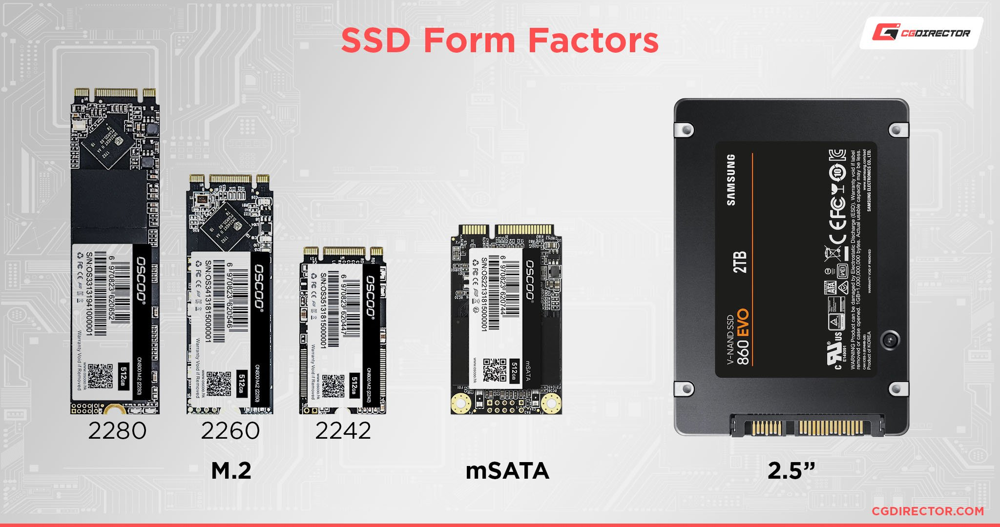

Componentes Clave de un PC (Hardware)
Documento de introducción a dos módulos clave del ciclo: Montaje de Equipos y Seguridad Informática.
Índice de Contenidos
A.Componentes Clave de un PC (Hardware)
B.5 Consejos de seguridad basica
Componentes Clave de un PC(HARDWARE)
El hardware es el núcleo del sistema. Aquí están los elementos esenciales para que un equipo microinformático funcione correctamente:

*(Imagen: Un disco SSD, un componente vital para el almacenamiento actual)
Lista de Componentes Principales:
CPU (Unidad Central de Procesamiento): El “cerebro” del ordenador.
(Memoria de Acceso Aleatorio): Memoria volátil y ultrarrápida.
Placa Base (Motherboard): La plataforma central que interconecta todos los demás componentes.
Almacenamiento (SSD/HDD): Guarda la información de forma persistente.
Fuente de Alimentación (PSU): Convierte la corriente alterna (AC) en continua (DC).
Volver al indice